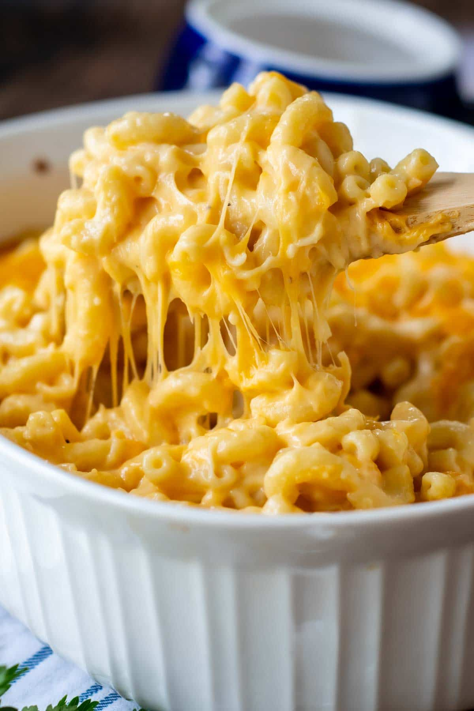

<!DOCTYPE html>
<html lang="en">
<head>
    <meta charset="UTF-8">
    <meta http-equiv="X-UA-Compatible" content="IE=edge">
    <meta name="viewport" content="width=device-width, initial-scale=1.0">
    <title>MacnCheese/title>
</head>
<body>
    <h1>Macaroni and Cheese(MacnCheese for short)</h1>
    
    <h3>DESCRIPTION</h3>
    <p>Quick, easy, and tasty macaroni and cheese dish. Fancy, designer mac and cheese often costs forty or fifty dollars to prepare when you have so many expensive cheeses, but they aren't always the best tasting. This simple recipe is cheap and tasty.</p>
    <p>Looking for a homemade alternative to boxed mac and cheese that's just as quick and easy? This stovetop mac and cheese uses staple ingredients and comes together in just 25 minutes. You'll want to bookmark this recipe for busy weeknights. The good news is, it's so simple that once you make it a couple times, you'll likely have it memorized.</p>
    <h4>INGREDIENTS</h4>
    <ul>
        <li>Macaroni</li>
        <li>Cheese</li>
    </ul>
    <h4>STEPS</h4>
    <ol>
        <li>Boil Macaroni
            Bring a pot of water to a boil. Cook elbow macaroni until al dente, about 8 minutes.
            
            Tip: For a thicker mac and cheese, double the amount of macaroni.</li>
        <li> Make a Roux
            While the macaroni is cooking, go ahead and start on the roux. A roux is a thickening agent made of one part fat and one part flour that makes up the base of this creamy mac and cheese.
            
            To make the roux, start by melting butter in a saucepan over medium heat. Add flour, salt, and pepper and stir until smooth. Slowly pour in milk and stir until the mixture is smooth and bubbling. Be careful to not let the milk burn.</li>
        <li>Add Cheese and Macaroni
            Finally, the most crucial step: Add cheese! Slowly stir in Cheddar cheese until smooth and melted. We recommend you grate your own cheese because pre-shredded cheese won't incorporate into the mixture as well as block cheese.
            
            Once the macaroni is finished cooking, drain and stir into cheese sauce until coated.</li>    
    </ol>
</body>
</html>